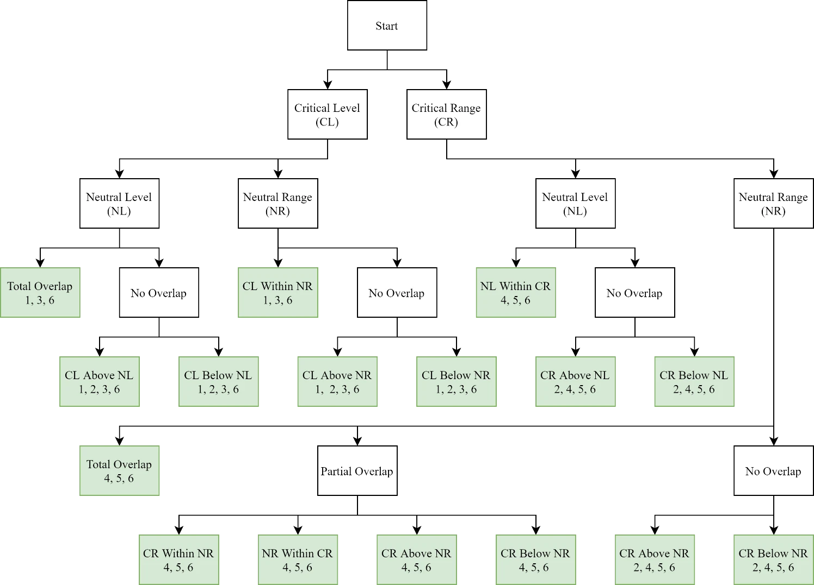
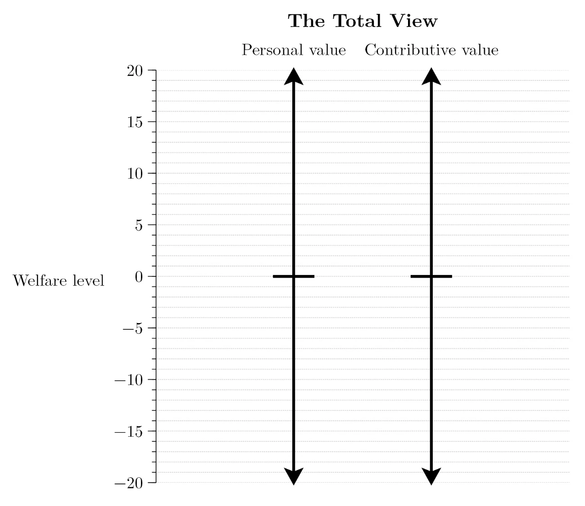
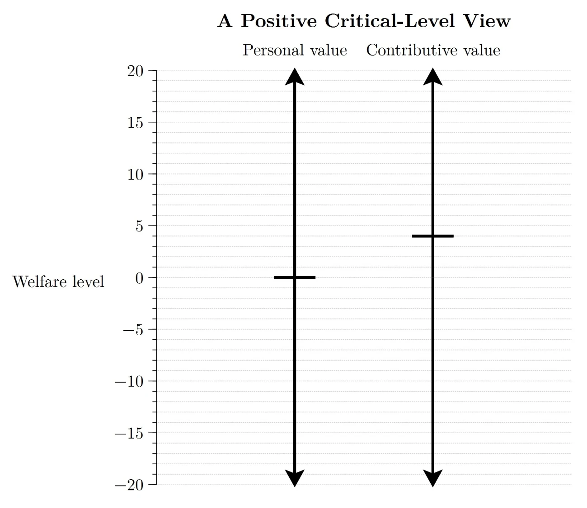
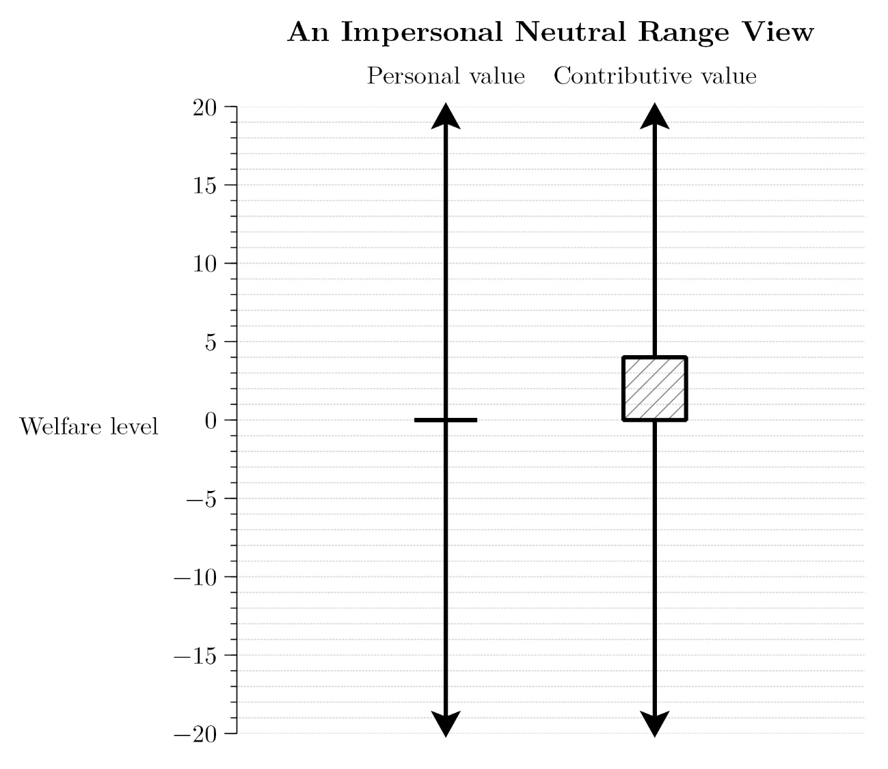
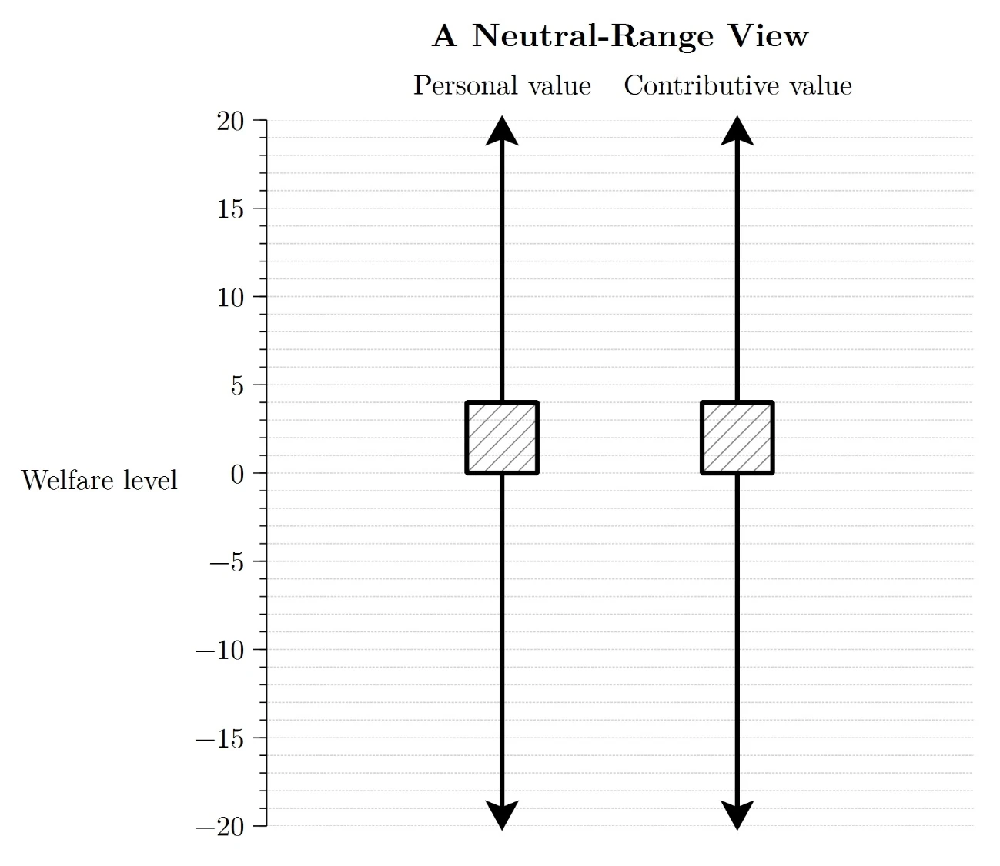
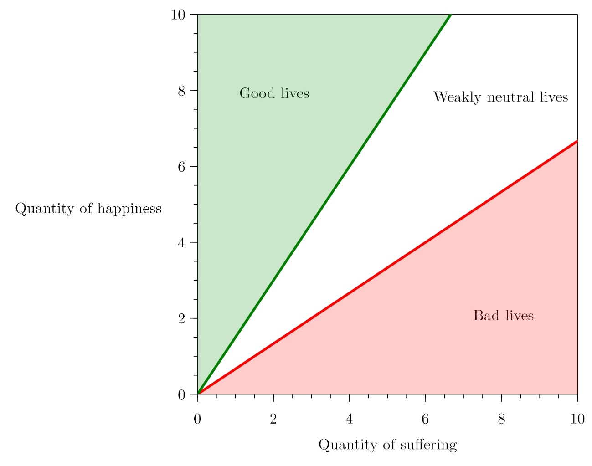
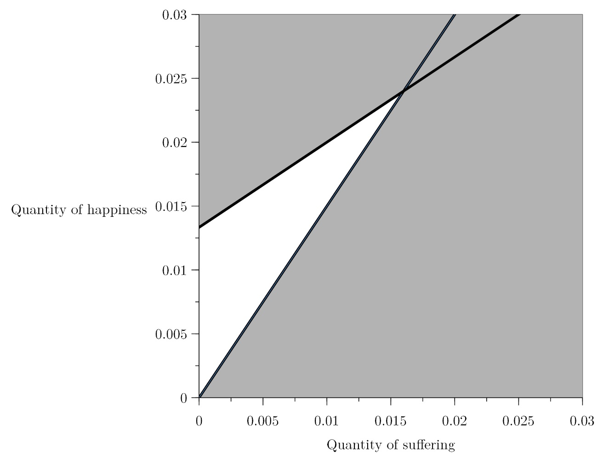

Critical Levels, Critical Ranges, and Imprecise Exchange Rates in Population Axiology
Abstract
According to critical-level views in population axiology, an extra life improves a population if and only if that life’s welfare level exceeds some fixed “critical level.” An extra life at the critical level leaves the new population equally good as the original. According to critical-range views, an extra life improves a population if and only if that life’s welfare level exceeds some fixed “critical range.” An extra life within the critical range leaves the new population incommensurable with the original. In this paper, I sharpen some old objections to these views and offer some new ones. Critical-level views cannot avoid certain repugnant and sadistic conclusions. Critical-range views imply that lives featuring no good or bad components whatsoever can nevertheless swallow up and neutralize goodness and badness. Both classes of view imply discontinuities in implausible places. I then offer a view that retains much of the appeal of critical-level and critical-range views while avoiding the above pitfalls. On the Imprecise Exchange Rates View, various exchange rates—between pairs of goods, between pairs of bads, and between goods and bads—are imprecise. This imprecision is the source of incommensurability between lives and between populations.
0. Introduction
How do we determine whether one population is at least as good as
another? Here is one easy answer. We use a number to represent each
person’s welfare—how good their life is for them—with the size of the
number proportional to how good their life is. Positive numbers
represent good lives, negative numbers represent bad lives, and zero
represents lives that are neither good nor bad. We then sum these
numbers to get the value of each population. A population
The Total View implies that we can improve populations by adding lives that are barely worth living, and some find this implication distasteful. We can avoid this implication by first subtracting some positive constant from the number representing a person’s welfare and then summing the results. Call these population axiologies critical-level views.
Critical-level views cannot account for two intuitions that many
people find appealing. The first is that there is a range of
welfare levels such that adding lives at these levels makes a population
neither better nor worse. The second is that populations of different
sizes may be incommensurable, so that neither population is
better than the other and yet nor are they equally good. In that case,
we might prefer to subtract a range of positive constants from the
number representing a person’s welfare and then calculate the value of a
population relative to each constant within the range. We can then claim
that
Critical-level and critical-range views fall within the more general class of critical-set views. I offer a characterization and taxonomy of these views below, along with six objections that tell against various views in this taxonomy. Some views imply repugnant or sadistic conclusions. Other views make neutrality implausibly greedy. Each view implies at least one implausible discontinuity, and no view can account for the incommensurability between lives and between same-size populations without extra theoretical resources.
I then offer a view that retains much of the appeal of critical-set views while avoiding many of the aforementioned pitfalls. The Imprecise Exchange Rates View has its start in the observation that there are often no precise truths about whether it is worth undergoing some bad for the sake of some good. It makes sense of this observation by claiming that various exchange rates between goods and bads are imprecise. This imprecision renders certain combinations of goods and bads incommensurable with other combinations. The view thus provides a natural explanation of incommensurability between lives and between same-size populations, avoids all forms of sadism along with the most concerning instances of repugnance and greediness, and has many other advantages besides.
I characterize and taxonomize critical-set views in section 1 and object to them in section 2. I introduce the Imprecise Exchange Rates View in section 3, canvas its advantages in section 4, and address some objections in section 5. I sum up in section 6.
1. Critical-Set Views
Foundational to critical-set views is the notion of a life. I follow Broome in loosely defining a life as “how things are for a person,” where this phrase is understood to include all those things that can affect that life’s welfare, how good the life is for the person living it.Broome, Weighing Lives, 94–95. This definition jars somewhat with our ordinary understanding of a life. Depending on our theory of welfare, it might count events occurring after a person’s death as part of their life. But for our purposes, this terminological strangeness is of little consequence. The definition also allows that more than one person can live the same life. This possibility simplifies the ensuing discussion.
Advocates of critical-set views assume that welfare is both measurable on an interval scale and interpersonally level-comparable. Measurability on an interval scale allows us to talk meaningfully about ratios of differences in welfare, so that claims like the following are meaningful: “The difference in welfare between the life Ada would have as an artist and the life Ada would have as a baker is twice the size of the difference in welfare between the life Ada would have as a baker and the life Ada would have as a consultant.” Interpersonal level-comparability allows us to compare the welfare of different people, so that claims like the following are meaningful: “The life Ada would have as an artist contains more welfare than the life Bob would have as a baker.” This claim is equivalent to the claim that “The life Ada would have as an artist is personally better than the life Bob would have as a baker.” In other words, “The life Ada would have as an artist is better for her than the life Bob would have as a baker is for him.” I mostly use the terminology of personal betterness below.
Advocates of critical-set views claim that each life’s welfare can be
represented by a real-valued function
Critical-set views typically go on to sort lives into absolute categories. Which category a life falls in depends on how it compares to some standard: a life is personally good iff it is better than the standard, personally bad iff it is worse than the standard, and personally neutral iff it is neither better nor worse than the standard. The category of personally neutral lives can be refined further. Following Rabinowicz, I will say that a life is personally strictly neutral iff it is equally good as the standard and personally weakly neutral iff it is incommensurable with the standard.Rabinowicz, “Getting Personal,” 80-81. Gustafsson calls these lives “neutral” and “undistinguished” respectively (“Population Axiology and the Possibility of a Fourth Category of Absolute Value”). The standard in question is defined differently by different authors. Some define it as nonexistence.Arrhenius and Rabinowicz, “The Value of Existence.” Others define it as a life constantly at a neutral level of temporal welfare.Broome, Weighing Lives, 68; Bykvist, “The Good, the Bad, and the Ethically Neutral,” 101. Still others define it as a life without any good or bad components—features of a life that are good or bad for the person living it.Arrhenius, “Future Generations,” 26. With one caveat, critical-set views are compatible with each definition.The caveat is that neutral-range views—explained below—cannot be paired with the latter two definitions. Neutral-range views claim that all lives are personally commensurable with each other and that some lives are personally incommensurable with the standard. That means that the standard cannot be a life. I thank an anonymous reviewer for pointing this out.
So much for comparing lives. Comparing populations — sets of lives —
requires more machinery. Critical-set views start by designating some
(gapless) set of welfare levels to be the critical set. This
critical set is defined to be the set of all welfare levels such that
adding lives at these welfare levels to a population makes that
population neither better nor worse. Each welfare level within this
critical set is called a critical level. These critical levels
play a key role in determining a life’s contributive value,
which we can understand as the contribution that a life makes to the
value of a population. On critical-set views, the contributive value
(1)
The value of a population
(2)
And a population
Here is an example to illustrate. Suppose that we have two
populations,
The characterization prior to this example constitutes the common core of critical-set views. The following four choice points divide the class. First, a critical-set view’s critical set can comprise either a single critical level or multiple critical levels, forming a critical range. The former are critical-level views and the latter are critical-range views. On critical-level views, lives at the critical level are contributively strictly neutral, by which I mean that adding these lives to a population leaves the new population equally good as the original. On critical-range views, lives within the critical range are contributively weakly neutral, by which I mean that adding these lives to a population renders the new population incommensurable with the original. On all critical-set views, adding lives at welfare levels above the critical set makes a population better and adding lives at welfare levels below the critical set makes a population worse. I will call such lives contributively good and contributively bad respectively.
The second choice point concerns the personally neutral set. This too can comprise either a single personally neutral level or a personally neutral range. Neutral-level views claim that lives at the personally neutral level are personally strictly neutral, so that they are personally equally good as the standard. Neutral-range views claim that lives within the personally neutral range are personally weakly neutral, so that they are personally incommensurable with the standard. From now on, I drop the “personally” from expressions like “personally neutral set”. “Neutral set” refers to the set of welfare levels such that lives at those levels are personally neutral. “Critical set” refers to the set of welfare levels such that lives at those levels are contributively neutral.
The third choice point is one on which I have already taken a stand. Critical-range and neutral-range views can interpret their critical and neutral ranges as ranges of incommensurability, parity, indeterminacy, some other value relation, or any combination of the aforementioned phenomena.For incommensurability, see Blackorby, Bossert, and Donaldson, “Quasi-Orderings and Population Ethics.” For parity, see Qizilbash, “The Mere Addition Paradox, Parity and Vagueness”; Qizilbash, “On Parity and the Intuition of Neutrality”; and Rabinowicz, “Broome and the Intuition of Neutrality.” For indeterminacy, see Broome, Weighing Lives. I adopt the language of incommensurability in this paper, but my discussion can be translated into other terms without significant change to its import.
The fourth choice point concerns the relative positions of the critical and neutral sets. The options available at this stage depend on the directions taken at the first and second choice points, so I outline them in figure 1. The numbers at each terminus indicate which of the objections listed below apply to that view.

Many of the views in this taxonomy have never been advocated in print, but I lay them all out here for the sake of completeness. Four views that have been defended in print are the Total View, a positive critical-level view, a critical-range view, and a neutral-range view. I diagram them below. Horizontal lines denote that lives at the corresponding welfare level are personally/contributively strictly neutral. Boxes denote that lives at the corresponding welfare levels are personally/contributively weakly neutral. Lives at welfare levels above (below) the horizontal line or shaded box are personally/contributively good (bad). The numbers are purely illustrative.
First, the Total View (fig. 2), which is defended by Hudson, Tännsjö, and Huemer, among others.Hudson, “The Diminishing Marginal Value of Happy People”; Tännsjö, “Why We Ought to Accept the Repugnant Conclusion”; Huemer, “In Defence of Repugnance.” There is a single coinciding neutral level and critical level, so that a life is personally good (bad/strictly neutral) iff it is contributively good (bad/strictly neutral). Any two populations are commensurable.

Second, a positive critical-level view (fig. 3), defended by Blackorby, Bossert, and Donaldson.Blackorby, Bossert, and Donaldson, Population Issues in Social Choice Theory, Welfare Economics, and Ethics; Bossert, “Anonymous Welfarism, Critical-Level Principles, and the Repugnant and Sadistic Conclusions.” There is a single critical level above a single neutral level, so a life can be personally good without being contributively good. Any two populations are commensurable.

Third, a critical-range view. A view of this kind is defended by Broome, who interprets the critical range as a range of indeterminacy, along with Qizilbash and Rabinowicz, who each interpret the critical range as a range of parity.Broome, Weighing Lives; Qizilbash, “The Mere Addition Paradox, Parity and Vagueness”; Qizilbash, “On Parity and the Intuition of Neutrality”; Rabinowicz, “Broome and the Intuition of Neutrality.” There is a single neutral level but a critical range, so any overlap between the neutral and critical sets can be partial at most. In figure 4, I present a version of the view in which the neutral level coincides with the lowest welfare level in the critical range. On critical-range views, some pairs of populations are incommensurable.

Finally, a neutral-range view (fig. 5). Rabinowicz discusses a view of this kind in more recent work, and Gustafsson defends a view of this form in which there is a neutral and critical range for temporal welfare levels as well as lifetime welfare levels.Rabinowicz, “Getting Personal”; Gustafsson, “Population Axiology and the Possibility of a Fourth Category of Absolute Value.” On neutral-range views, there is a neutral range and critical range that totally overlap, so a life is personally good (bad/weakly neutral) iff it is contributively good (bad/weakly neutral). Some pairs of populations are incommensurable.

2. Objections to Critical-Set Views
Many varieties of critical-set view are subject to the same objections. Each view must reckon with at least three of the following six.
2.1. Maximal Repugnance
Any critical-set view on which lives barely worth living are contributively good will imply the:
Repugnant Conclusion: Each population of wonderful lives is worse than some population of lives barely worth living.Parfit, Reasons and Persons, 388.
And any critical-set view on which lives barely worth not living are contributively bad will imply the:
Mirrored Repugnant Conclusion: Each population of awful lives is better than some population of lives barely worth not living.Gustafsson, “Population Axiology and the Possibility of a Fourth Category of Absolute Value,” 85. Carlson calls this claim the “Reverse Repugnant Conclusion” (“Mere Addition and Two Trilemmas of Population Ethics,” 297). Broome calls it the “Negative Repugnant Conclusion” (Weighing Lives, 213).
Both of these consequences arise because, on critical-set views, a population of enough contributively good (bad) lives can be better (worse) than any other population.
However, as Rabinowicz notes, the repugnance of these conclusions is attenuated if lives at a wide range of welfare levels are personally neutral.Rabinowicz, “Broome and the Intuition of Neutrality,” 406; Rabinowicz, “Getting Personal,” 79. In that case, lives barely worth living are much better than lives barely worth not living. What makes the Repugnant Conclusion and its mirror troubling is the presumed similarity of lives barely worth living and lives barely worth not living. With that in mind, I define Maximal Repugnance as follows:
Maximal Repugnance: There is a life
and a life that is identical but for one fewer gumdrop’s worth of pleasure and one more hangnail’s worth of pain such that (1) each population of wonderful lives is worse than some population of lives and (2) each population of awful lives is better than some population of lives.
Note that I drop the specification that
Given that one fewer gumdrop’s worth of pleasure and one extra hangnail’s worth of pain can push a life’s welfare level from above the critical level to below it, all critical-level views imply Maximal Repugnance.
2.2. Sadism
Any view on which there is no overlap between the critical set and the neutral set implies some sadistic conclusion. If the critical set is above the neutral set and there is some welfare level between the two, the view implies the original:
Sadistic Conclusion: Each population of awful lives is better than some population of personally good lives.Arrhenius, “An Impossibility Theorem for Welfarist Axiologies,” 256.
That is because lives at a welfare level above the neutral set and below the critical set are personally good but contributively bad. And on critical-set views, adding enough contributively bad lives to a population can make that population worse than any other.
If the critical set is below the neutral set and there is some welfare level between them, the view implies the:
Mirrored Sadistic Conclusion: Each population of wonderful lives is worse than some population of personally bad lives.Gustafsson, “Population Axiology and the Possibility of a Fourth Category of Absolute Value,” 85.
That is because lives at a welfare level below the neutral set and above the critical set are personally bad but contributively good. And on critical-set views, adding enough contributively good lives to a population can make that population better than any other.
We could endorse a critical-set view on which there is no overlap between the neutral set and the critical set and yet no welfare level between the two sets.That is possible if welfare levels are not dense (by which I mean, there is some pair of distinct welfare levels with no welfare level between them) or if the neutral set and critical set are such that exactly one of them is open at the end where they meet (for example, if the neutral set is [0, 1) and the critical set is [1, 2]). These kinds of views imply only weaker forms of sadism. If the critical set is above the neutral set, the view implies a:
Weaker Sadistic Conclusion: Each population of awful lives is better than some population of personally neutral lives.
If the critical set is below the neutral set, the view implies a:
Weaker Mirrored Sadistic Conclusion: Each population of wonderful lives is worse than some population of personally neutral lives.
These conclusions are more plausible than the pair above, but that is faint praise. In fact, comparison with the previous subsection will show that they could equally be called Stronger Mirrored and Stronger Repugnant Conclusions, respectively.I use the words “weaker” and “stronger” rather than “weak” and “strong” to distinguish these conclusions from the Weak Sadistic Conclusion and Strong Repugnant Conclusion that appear in Gustafsson (“Population Axiology and the Possibility of a Fourth Category of Absolute Value,” 86) and Meacham (“Person-Affecting Views and Saturating Counterpart Relations,” 270) respectively.
All views with no overlap between the critical set and the neutral set imply some form of sadism.
2.3. Strong Superiority across Slight Differences
Consider a sequence of lives beginning with a contributively good
life
On critical-level views, each life is either contributively good,
contributively strictly neutral, or contributively bad. That means that,
in our sequence, there is some contributively good life
We might claim that this implication is of little concern:
2.4. Strong Noninferiority across Slight Differences
This instance of SSASD might spur us to adopt a critical-range view.
On critical-range views, lives at a range of welfare levels are
contributively weakly neutral. If this range is wide enough, our
Suppose that all the welfare levels between 0 and 4 inclusive are
critical. And suppose that
More generally, each contributively weakly neutral life has positive
contributive value relative to some critical level
However, critical-range views still imply Strong Noninferiority
across Slight Differences: for some
Consider a new sequence. Each life in this sequence features a blank
period, free of any good or bad components. We can imagine it as a
minute of dreamless sleep. The first life in the sequence
Intuitively, the first discontinuity in this sequence occurs between
But critical-range views must deny at least one of these claims.
Recall that on critical-range views, more than one welfare level is
critical. Therefore, in any sequence with sufficiently small differences
in welfare between adjacent lives, more than one life is contributively
weakly neutral. We can make the differences in welfare between adjacent
lives in our
Suppose for illustration that when the unit of time is seconds,
We get a mirror of this implication if we suppose instead that
Nothing hinges on the particular lives chosen to illustrate this dynamic. Any critical-range view will imply that (1) a population of just a single straightforwardly-better-than-blank life is not worse than any population of straightforwardly-better-than-blank lives identical but for a slightly smaller quantity of good, or (2) a population of just a single straightforwardly-worse-than-blank life is not better than any population of straightforwardly-worse-than-blank lives identical but for a slightly smaller quantity of bad.
2.5. Maximal Greediness
Critical-range views face another difficulty. As Broome points out,
they imply that contributively weakly neutral lives can “swallow up” and
neutralize goodness and
badness.Broome, Weighing Lives, 169–70 and 202–5.
Here is an illustration of what that means. Suppose again that all
welfare levels between 0 and 4 inclusive are critical. And suppose that
population
Note first that the size of population
It gets worse. Consider again our
If the straightforwardly-worse-than-blank life
Shifting the critical range away from blank lives fails to mitigate
the difficulty. If the critical range is above or below the welfare
level of a blank life, then some other life in our
2.6. No Incommensurability between Lives or between Same-Size Populations
On critical-level views, a population’s value can be represented by a
real number. Since any two real numbers are commensurable (
However, universal commensurability seems implausible. Consider the
following small improvement
argument.De Sousa, “The Good and the True”; Chang, “The Possibility of
Parity.” Suppose that
Critical-range views can account for this incommensurability. They
can claim that
This is easiest to see in the single-life case. Critical-set views
assume that a life’s welfare can be represented by a real number. Since
any two real numbers are commensurable, this assumption implies that any
two lives are commensurable:
Now note critical-set views’ equation for the value of a population
(3)
Since this equation is a sum of welfare levels minus the critical level, assuming that a life’s welfare can be represented by a real number implies that a population’s value relative to a critical level can be represented by a real number. That in turn implies that the value of any two populations relative to a critical level is commensurable. Formally,
(1) For any populations
and and any critical level , or .
Now let
(4)
This inequality can also be expressed as follows, with
(5)
The terms involving
(6)
Therefore, the inequality is true for all values of
(2) For any same-size populations
and and any critical level , if , then is at least as good as .
Together, (1) and (2) imply:
(3) For any same-size populations
and , is at least as good as or is at least as good as .
In other words, critical-set views imply that any two same-size populations are commensurable.
However, universal commensurability of same-size populations seems
implausible. Consider another small improvement argument. Suppose that
Partly on the basis of such arguments, advocates of critical-set views have started to incorporate incommensurability and indeterminacy into their theories of personal betterness. Broome, for example, states that some pairs of lives are obviously indeterminately related but offers no explanation for why this is so.Broome, “Loosening the Betterness Ordering of Lives.” Rabinowicz, meanwhile, offers a fitting-attitudes analysis of parity—one species of incommensurability—according to which two lives are on a par iff it is permissible to prefer either life to the other.Rabinowicz, “Getting Personal.” And Gustafsson accounts for incommensurability between lives by claiming that there is a neutral range of temporal welfare levels.Gustafsson, “Population Axiology and the Possibility of a Fourth Category of Absolute Value.” Adding a moment within this range to a life renders the new life incommensurable with the original.
Gustafsson’s move strikes me as a step in the right direction. However, his view cannot account for the incommensurability between same-length lives for the same reason that critical-range views cannot account for the incommensurability between same-size populations. Gustafsson might claim that any two lives of the same length are commensurable, but this claim seems implausible. The small improvement argument involving drab and turbulent lives remains convincing if we specify that the lives are the same length.
Rabinowicz’s account is incomplete but, I believe, more promising. He claims that “life wellbeing is a many-dimensional concept,” that “specifying its level requires characterizing a life with respect to several relevant dimensions,” and that “different weight assignments” to these relevant dimensions give rise to incommensurability between lives.Rabinowicz, “Getting Personal,” 81. This notion of “different weight assignments” forms the core of the Imprecise Exchange Rates View.
3. Imprecise Exchange Rates
Some trade-offs are worth making. For example, going to the dentist to prevent tooth decay is a trade-off worth making. The good of having healthy teeth outweighs the bad of the trip. Other trade-offs are worth not making. Getting up at 4 a.m. and walking to work to save the £2 bus fare is a trade-off worth not making. The bad outweighs the good. Still other trade-offs are neither worth making nor worth not making, and a small improvement fails to break the deadlock. Here is an example.
A parent says to their child, “No dessert unless you finish your dinner.” The child knows exactly what finishing dinner involves. They are all too familiar with the taste of peas and can see one hundred of them left on the plate. They also know what dessert will be like. The jelly is sitting on the counter and promises to taste as good as it always has. In this case, the trade-off may be neither worth making nor worth not making. And a small improvement to the child’s predicament need not resolve the issue. Suppose that the parent takes pity on the child and removes one pea from the plate. That need not ensure that finishing dinner is now a trade-off worth making.
I claim that cases of this kind are evidence that various exchange rates—between pairs of goods, between pairs of bads, and between goods and bads—are imprecise. This imprecision renders certain goods incommensurable with other goods, certain bads incommensurable with other bads, and certain combinations of goods and bads incommensurable with other combinations. In the child’s case, eating both the peas and the jelly is incommensurable with eating neither. This incommensurability between goods, bads, and their combinations is the source of incommensurability between lives. The child’s life in which they eat the peas and jelly is incommensurable with the otherwise identical life in which they eat neither.
That is one motivation for the Imprecise Exchange Rates (IER) View.
Now for the formalization. Recall that critical-set views begin with an
ordering of lives by welfare. The IER View begins instead with a set of
orderings: one for each dimension of good and bad within a life. The
exact form of the view thus depends on our theory of welfare. If we
accept the simplest hedonist theory, there are just two orderings: one
of happiness and one of suffering. If we accept an objective list
theory, there are more orderings: perhaps one of love, one of virtue,
one of false belief, etc. Welfare levels are thus given by vectors.
Suppose, for example, that we accept an objective list theory on which
happiness (
(7)
I assume that
Each ratio scale is independent, so we cannot yet compare values
across dimensions. We cannot make claims like “In the life Ada would
have as an artist, her happiness outweighs her suffering.” Comparisons
of this kind are only possible given a specified
proto-exchange-rate
On the IER View, only welfare levels relative to a given
(8)
The value of a population relative to
(9)
We then account for incommensurability by claiming that there are
multiple proto-exchange-rates
In what follows, I mostly discuss a simple hedonist version of the
IER View, in which the welfare level of a life
4. Advantages of the Imprecise Exchange Rates View
The IER View has several advantages over critical-set views. Here are four.
4.1. Some Incommensurability between Lives and between Same-Size Populations
The first advantage is that the IER View offers a simple and
plausible account of incommensurability between lives and between
same-size populations. Recall that a life is at least as good as another
iff its welfare level is at least as great relative to each
Consider an example. Suppose that
The IER View also gives us the right result in small improvement
cases. A slightly improved life
Dominance over Dimensions: For any lives
and and any set of proto-exchange-rates , if for each good dimension , features at least as much as , and for each bad dimension , features at most as much as , is at least as good as . If, in addition, features more than for some or less than for some , is better than .Here is a sketch of the proof. Life is at least as good as life relative to any iff for any and . Rearranging this equation gives . If dominates , then and , so each term on the left-hand side of the inequality in the previous sentence is nonnegative. Therefore, the weak inequality holds. If, in addition, features more happiness or less suffering than , then at least one term on the left-hand side of the inequality is positive, so the strict inequality holds. This proof can be extended to any number of dimensions of good and bad.
Another implication is related. Let us say that two
proto-exchange-rates differ in optimism iff they differ in the
total weight granted to all dimensions of good taken
together.Here is an example. Return briefly to our objective list theory on
which happiness, love, suffering, and false belief are the dimensions of
good and bad, and consider the following three proto-exchange-rates:
The above three points are true of populations as well as lives. If
4.2. No Sadism
Recall that critical-set views positing no overlap between the critical set and the neutral set imply some sadistic conclusion: either each population of awful lives is better than some population of lives that are not personally bad, or each population of wonderful lives is worse than some population of lives that are not personally good.
The IER View can avoid this drawback. More precisely, the IER View avoids sadism if we make the plausible claim that blank lives are personally strictly neutral. This claim implies that only blank lives are personally strictly neutral since, as we saw in the last subsection, no lives differing in their quantities of good or bad can be equally good. The extension of personal strict neutrality then matches the extension of contributive strict neutrality since, on the IER View, only blank lives are contributively strictly neutral. Adding any other kind of life changes the quantity of good or bad in the population, and no populations differing in their quantities of good or bad can be equally good.
This coincidence of personal and contributive strict neutrality
suffices to establish that each category of personal value coincides
with the corresponding category of contributive value. That is because
the IER View then determines each life’s personal and contributive
category in the same way: its value is compared to the value of a blank
life relative to each proto-exchange-rate in
With the coincidence of each personal and contributive category of
value on the IER View established, I often drop the words “personal” and
“contributive” in what follows. In figure 6, I graph these coincident
categories for lives at different welfare levels on the IER View with

4.3. Less Concerning Superiority and Noninferiority
As we saw above, critical-level views imply a concerning instance of
Strong Superiority across Slight Differences (SSASD) in our
The IER View avoids both of these problems. Consider first SSASD.
Suppose, for illustration, that an extra hangnail adds 0.02 to a life’s
quantity of suffering. Suppose also that some turbulent life
We get the same result with lives at many other welfare levels. In
fact, the IER View avoids SSASD in all but a small minority of cases. To
see those cases in which SSASD is implied, let

A life
I write “almost” because an added hangnail can trigger strong
noninferiority, even in turbulent lives. Consider again the
case in which
More generally, an extra hangnail will trigger strong noninferiority
whenever at least one of the lives being compared is weakly neutral. In
that case, the extra hangnail will push the life’s value from positive
to negative relative to some
This too is a welcome result. Suppose we must choose between two populations. Each population consists of lives at only one welfare level; one population’s lives are better than the other’s; and at least one population consists of lives that are neither good nor bad. Then it is not worse to choose the population consisting of the better lives, regardless of the populations’ respective sizes.
And importantly, the IER View does not imply strong noninferiority
across straightforwardly-better-than-blank lives or strong
nonsuperiority across straightforwardly-worse-than-blank lives, as
critical-range views do. To see why, consider a life
4.4. Less Concerning Greediness
Recall that critical-range views imply Maximal Greediness: for any population of awful lives and any population of wonderful lives, (1) there is some population of straightforwardly-better-than-blank lives such that the population of awful lives is not worse than the population of wonderful lives plus the straightforwardly-better-than-blank lives, or (2) there is some population of straightforwardly-worse-than-blank lives such that the population of wonderful lives is not better than the population of awful lives plus the straightforwardly-worse-than-blank lives. This disjunction follows from critical-range views’ claim that lives at more than one welfare level are contributively weakly neutral and their assumption that any two lives are commensurable. Together, these imply that some straightforwardly-better-than-blank life or some straightforwardly-worse-than-blank life is contributively weakly neutral. And on critical-range views, adding enough contributively weakly neutral lives to a population can make that population incommensurable with any other.
The IER View agrees that lives at more than one welfare level are
contributively weakly neutral. On the IER View with
Straightforwardly-better-than-blank lives, meanwhile—with welfare
level
On the IER View, only lives featuring some positive quantity of good can neutralize badness, and only lives featuring some positive quantity of bad can neutralize goodness. This is as it should be.
5. Objections to the Imprecise Exchange Rates View
The above four points constitute the main advantages of the IER View. Below are two objections.
5.1. Some Incommensurability between Good Lives and Weakly Neutral Lives
On the IER View, some good lives are incommensurable with some weakly
neutral lives. Take a life
Although this consequence might seem odd, we ought to accept it. The reasons are twofold. First, the implication is not unique to the IER View. It is an inevitable consequence of admitting the possibility of lives both weakly neutral and close-to-strictly neutral, as Gustafsson and Rabinowicz note.Gustafsson, “Population Axiology and the Possibility of a Fourth Category of Absolute Value,” 96; Rabinowicz, “Getting Personal,” 86. To see why, recall that strictly neutral lives are equally good as the standard and that weakly neutral lives are incommensurable with the standard. These definitions imply that strictly neutral lives are incommensurable with weakly neutral lives. As Raz notes, a small improvement or detriment to either of two incommensurable objects typically does not remove their incommensurability.Raz, The Morality of Freedom, 326. Such small tweaks can make a difference only when one of the two objects is almost better than the other. Therefore, if a strictly neutral life is neither almost better nor almost worse than some weakly neutral life, then some good life (slightly better than the strictly neutral life) and some bad life (slightly worse than the strictly neutral life) will also be incommensurable with the weakly neutral life.
Second, incommensurability between some good lives and some weakly
neutral lives follows from three claims that we should be reluctant to
deny. The first is that a life featuring a positive quantity of good and
no bad whatsoever (like a life at welfare level
5.2. Some Instances of Maximal Repugnance
On the IER View, life
However, I claim that ruling out the IER View on this basis is
premature. Note first that implying this instance of Maximal Repugnance
seems preferable to the alternative, which is to claim that lives with
welfare level
Note also that the IER View implies Maximal Repugnance only when
lives
My final point is related. It is common in population axiology to
think of lives barely worth living as drab. Parfit asked us to imagine
lives in which the only pleasures are “muzak and
potatoes.”Parfit, “Overpopulation and the Quality of Life,” 148.
But a Muzak and potatoes life can have a welfare level of
6. Conclusion
The variety of possible critical-set views is dizzying, but each variety has serious drawbacks. On critical-level views, two extra hangnails can mark the difference between a good life and a bad life, even when the lives in question are long and turbulent. That means that a population of just a single life without the hangnails is better than any population of lives with them. It also means that each population of wonderful lives is worse than some population of lives without the hangnails, while each population of awful lives is better than some population of lives with them. On critical-range views, meanwhile, each population of wonderful lives and each population of awful lives is such that adding enough lives featuring only good and neutral components to the former makes it no better than the latter, or adding enough lives featuring only bad and neutral components to the latter makes it no worse than the former. What is more, some discontinuity in contributive value must occur in a counterintuitive place, so that a population of just a single life featuring only dreamless sleep and some duration of happiness is not worse than any population of lives identical but for a slightly shorter duration of happiness, or a population of just a single life featuring only dreamless sleep and some duration of suffering is not better than any population of lives identical but for a slightly shorter duration of suffering. Some varieties of critical-set view are sadistic, and no variety can account for the incommensurability between lives and between same-size populations without extra theoretical resources.
The IER View comes equipped with the required theoretical resources. It diagnoses as the source of incommensurability the fact that some trade-offs are neither worth making nor worth not making and a small improvement fails to break the deadlock. The resulting incommensurability between lives allows us to claim both that blank lives are strictly neutral and that a wide range of turbulent lives are weakly neutral, so that the IER View captures the advantages of both critical-level and critical-range views and charts the narrow course between Maximal Greediness and the most concerning instances of Maximal Repugnance. Making the size of the contributively neutral range depend on a life’s quantity of goods and bads has another nice consequence: it gives gumdrops and hangnails their proper axiological due. When a life is nearly blank, one fewer gumdrop and one extra hangnail can take it from good to bad. When a life is turbulent, gumdrops and hangnails pale almost into axiological insignificance. And because the IER View determines a life’s categories of personal and contributive value in the same way, it escapes all forms of sadism.
In sum, the IER View is a worthy successor to critical-set views. It retains much of their appeal, while avoiding many of their pitfalls.I thank Hilary Greaves, Teruji Thomas, Tomi Francis, Kacper Kowalczyk, Alice van’t Hoff, Todd Karhu, Nikhil Venkatesh, Jessica Fischer, Aidan Penn, Michal Masny, Farbod Akhlaghi, and two anonymous reviewers for helpful comments and discussion.
References
Arrhenius, Gustaf. “Future Generations: A Challenge for Moral Theory.” PhD diss., Uppsala University, 2000.
———. “An Impossibility Theorem for Welfarist Axiologies.” Economics and Philosophy 16, no 2 (October 2000): 247–66.
Arrhenius, Gustaf, and Wlodek Rabinowicz. “The Value of Existence.” In The Oxford Handbook of Value Theory, edited by Iwao Hirose and Jonas Olson, 424–44. New York: Oxford University Press, 2015.
———. “Value Superiority.” In The Oxford Handbook of Value Theory, edited by Iwao Hirose and Jonas Olson, 225–48. New York: Oxford University Press, 2015.
Blackorby, Charles, Walter Bossert, and David Donaldson. Population Issues in Social Choice Theory, Welfare Economics, and Ethics. Cambridge: Cambridge University Press, 2005.
———. “Quasi-Orderings and Population Ethics.” Social Choice and Welfare 13, no. 2 (1996): 129–50.
Bossert, Walter. “Anonymous Welfarism, Critical-Level Principles, and the Repugnant and Sadistic Conclusions.” In The Oxford Handbook of Population Ethics, edited by Gustaf Arrhenius, Krister Bykvist, Tim Campbell, and Elizabeth Finneron-Burns. Oxford: Oxford University Press, forthcoming.
Broome, John. “Loosening the Betterness Ordering of Lives: A Response to Rabinowicz.” In The Oxford Handbook of Population Ethics, edited by Gustaf Arrhenius, Krister Bykvist, Tim Campbell, and Elizabeth Finneron-Burns. Oxford: Oxford University Press, forthcoming.
———. Weighing Goods. Oxford: Blackwell, 1991.
———. Weighing Lives. Oxford: Oxford University Press, 2004.
Bykvist, Krister. “The Good, the Bad, and the Ethically Neutral.” Economics and Philosophy 23, no. 1 (March 2007): 97–105.
Carlson, Erik. “Mere Addition and Two Trilemmas of Population Ethics.” Economics and Philosophy 14, no. 2 (October 1998): 283–306.
Chang, Ruth. “The Possibility of Parity.” Ethics 112, no. 4 (July 2002): 659–88.
de Sousa, Ronald B. “The Good and the True.” Mind 83, no. 332 (October 1974): 534–51.
Frick, Johann. “On the Survival of Humanity.” Canadian Journal of Philosophy 47, nos. 2–3 (2017): 344–67.
Gustafsson, Johan E. “Population Axiology and the Possibility of a Fourth Category of Absolute Value.” Economics and Philosophy 36, no. 1 (March 2020): 81–110.
Hudson, James L. “The Diminishing Marginal Value of Happy People.” Philosophical Studies 51, no. 1 (January 1987): 123–37.
Huemer, Michael. “In Defence of Repugnance.” Mind 117, no. 468 (October 2008): 899–933.
Meacham, Christopher J. G. “Person-Affecting Views and Saturating Counterpart Relations.” Philosophical Studies 158, no. 2 (March 2012): 257–87.
Nebel, Jacob M. “Totalism without Repugnance.” In Ethics and Existence: The Legacy of Derek Parfit, edited by Jeff McMahan, Tim Campbell, James Goodrich, and Ketan Ramakrishnan, 200–231. Oxford: Oxford University Press, 2021.
Parfit, Derek. “Overpopulation and the Quality of Life.” In Applied Ethics, edited by Peter Singer, 145–64. Oxford: Oxford University Press, 1986.
———. Reasons and Persons. Oxford: Clarendon Press, 1984.
Qizilbash, Mozaffar. “The Mere Addition Paradox, Parity and Vagueness.” Philosophy and Phenomenological Research 75, no. 1 (July 2007): 129–51.
———. “On Parity and the Intuition of Neutrality.” Economics & Philosophy 34, no. 1 (2018): 87–108.
Rabinowicz, Wlodek. “Broome and the Intuition of Neutrality.” Philosophical Issues 19, no. 1 (October 2009): 389–411.
———. “Getting Personal: The Intuition of Neutrality Reinterpreted.” In Studies on Climate Ethics and Future Generations, vol. 2, edited by Paul Bowman and Katharina Berndt Rasmussen, 59–90. Stockholm: Institute for Future Studies, 2020.
Raz, Joseph. The Morality of Freedom. Oxford: Oxford University Press, 1986.
Tännsjö, Torbjörn. “Why We Ought to Accept the Repugnant Conclusion.” Utilitas 14, no. 3 (November 2002): 339–59.
Thornley, Elliott. “A Dilemma for Lexical and Archimedean Views in Population Axiology.” Economics and Philosophy. Published ahead of print, September 6, 2021.